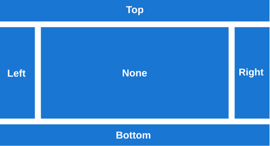

DockLayout
DockLayout is a layout where views can be docked to the sides of the layout container.
The image below shows how a DockLayout is conceptually structured. Child views are docked at one of 4 possible docking positions: Top, Bottom, Left or Right (equivalent to DockPosition.Top, DockPosition.Bottom, DockPosition.Left, and DockPosition.Right). Views that are not explicitly docked (or with DockPosition.None) are displayed at the center (or between Top / Bottom and Left / Right positions).

Building a DockLayout
The following sections cover how to use a DockLayout in both C# and XAML.
XAML
Including the XAML namespace
In order to use the toolkit in XAML the following xmlns needs to be added into your page or view:
xmlns:toolkit="http://schemas.microsoft.com/dotnet/2022/maui/toolkit"
Therefore the following:
<ContentPage
x:Class="CommunityToolkit.Maui.Sample.Pages.MyPage"
xmlns="http://schemas.microsoft.com/dotnet/2021/maui"
xmlns:x="http://schemas.microsoft.com/winfx/2009/xaml">
</ContentPage>
Would be modified to include the xmlns as follows:
<ContentPage
x:Class="CommunityToolkit.Maui.Sample.Pages.MyPage"
xmlns="http://schemas.microsoft.com/dotnet/2021/maui"
xmlns:x="http://schemas.microsoft.com/winfx/2009/xaml"
xmlns:toolkit="http://schemas.microsoft.com/dotnet/2022/maui/toolkit">
</ContentPage>
Using the DockLayout
A basic DockLayout can be created in XAML as shown here:
<ContentPage xmlns="http://schemas.microsoft.com/dotnet/2021/maui"
xmlns:x="http://schemas.microsoft.com/winfx/2009/xaml"
xmlns:toolkit="http://schemas.microsoft.com/dotnet/2022/maui/toolkit"
x:Class="MyProject.MyContentPage">
<toolkit:DockLayout>
<Button toolkit:DockLayout.DockPosition="Top" Text="Top" HeightRequest="50" />
<Button toolkit:DockLayout.DockPosition="Bottom" Text="Bottom" HeightRequest="70" />
<Button toolkit:DockLayout.DockPosition="Left" Text="Left" WidthRequest="80" />
<Button toolkit:DockLayout.DockPosition="Right" Text="Right" WidthRequest="90" />
<Button Text="Center" />
</toolkit:DockLayout>
</ContentPage>
For Left / Right docking, a WidthRequest should be specified. For Top / Bottom docking, a HeightRequest defines the size of the child view along the docking direction. The orthogonal directions are always calculated implicitly by the DockLayout manager.
C#
A DockLayout can be constructed conveniently in C# as shown here:
using CommunityToolkit.Maui.Layouts;
var page = new ContentPage
{
Content = new DockLayout
{
{ new Button { Text = "Top", HeightRequest = 50 }, DockPosition.Top },
{ new Button { Text = "Bottom", HeightRequest = 70 }, DockPosition.Bottom },
{ new Button { Text = "Left", WidthRequest = 80 }, DockPosition.Left },
{ new Button { Text = "Right", WidthRequest = 90 }, DockPosition.Right },
{ new Button { Text = "Center" } },
}
};
Note: DockPosition.None is the default and can be omitted.
Setting the dock position
To set the docking position from C#, use DockLayout.SetDockPosition(IView, DockPosition) to apply the attached DockPosition property.
var button = new Button { Text = "Top", HeightRequest = 50 };
DockLayout.SetDockPosition(button, DockPosition.Top);
Customizing a DockLayout
A DockLayout container supports arbitrary Padding as well as several DockLayout-specific properties for customization. An example in XAML with all available options is given here:
<ContentPage xmlns="http://schemas.microsoft.com/dotnet/2021/maui"
xmlns:x="http://schemas.microsoft.com/winfx/2009/xaml"
xmlns:toolkit="http://schemas.microsoft.com/dotnet/2022/maui/toolkit"
x:Class="MyProject.MyContentPage">
<toolkit:DockLayout HeightRequest="400"
WidthRequest="600"
Padding="10,20,30,40"
VerticalSpacing="10"
HorizontalSpacing="15"
ShouldExpandLastChild="False">
...
</toolkit:DockLayout>
</ContentPage>
Properties
| Property | Type | Description |
|---|---|---|
Padding |
Thickness |
Gets or sets the padding around the layout container (inherited from Layout). |
HorizontalSpacing |
double |
Gets or sets the horizontal spacing between docked views. |
VerticalSpacing |
double |
Gets or sets the vertical spacing between docked views. |
HorizontalSpacing and VerticalSpacing is applied between neighboring views in the DockLayout. For example, HorizontalSpacing is added between Left, None, and Right views, but also between neighboring views in the same DockPosition such as multiple views docked to the Left. VerticalSpacing is rendered between vertically stacked views in Top, None, and Bottom positions. |
||
ShouldExpandLastChild |
bool |
If true, the last child is expanded to fill the remaining space (default: true). |
Additional Notes
If DockLayout is used in a spatially constrained place (especially with a size specified via HeightRequest or WidthRequest on the container), precedence is given by the order in which the child views are added to the DockLayout container. Consequently, whenever there is not enough space for all child views to be rendered, the lowest priority children (which were added last) will be removed upon rendering. For that reason, you should always check that the size of the container covers at least the minimum size of all its child views.
Examples
You can find an example of the DockLayout feature in action in the .NET MAUI Community Toolkit Sample Application.
API
You can find the source code for DockLayout over on the .NET MAUI Community Toolkit GitHub repository in DockLayout and DockLayoutManager.